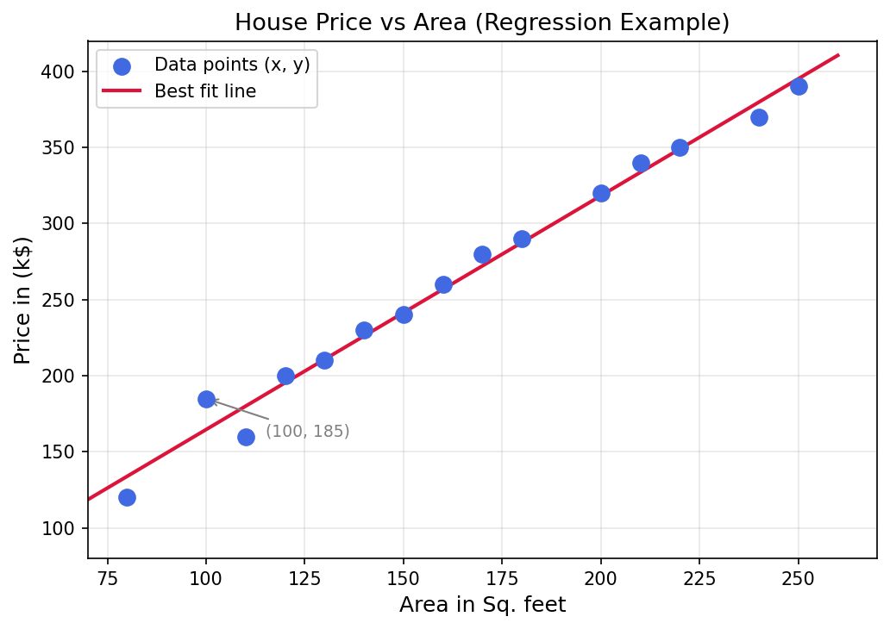
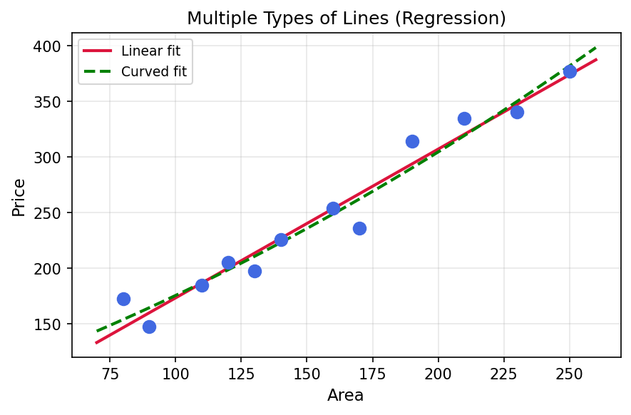
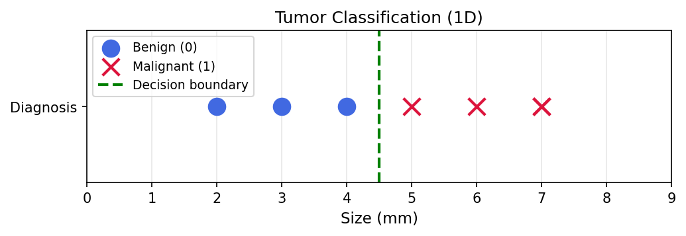
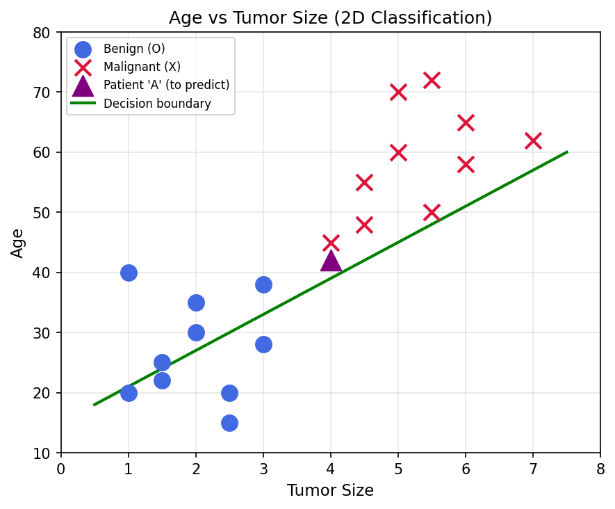
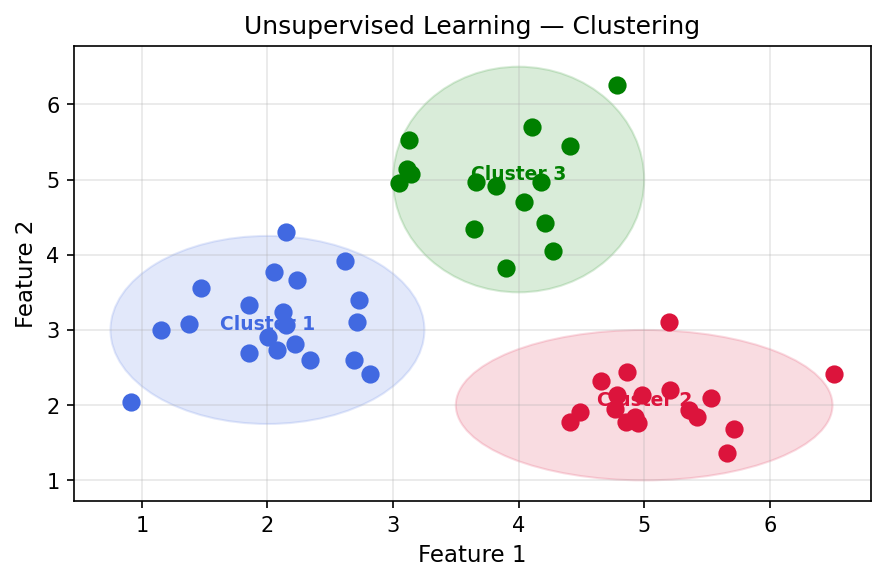

introduction to machine learning
As described by Arthur Samuel, Machine Learning is the science of getting computers to learn without being explicitly programmed.
To understand this, let's look at Arthur Samuel's checkers program. Arthur himself wasn't that great of a checkers player, but he made a program that watched hundreds of hours of checkers games. By analyzing so many hours of play, the computer learned to differentiate between good and bad positions on the board. Hence, every single time the computer played, it tried to achieve those "good positions."
Note on Training Data: Watching hundreds of hours of games was pivotal. Having too much or too little training data would have resulted in bad predictions. The data used to train an AI model must be:
- Large in quantity
- Good in variety
Machine Learning Algorithms
In machine learning, algorithms are like tools we use to solve problems. There are various types of algorithms—various "tools"—and they are extremely powerful. A machine learning engineer just needs to know and understand which tool to use under which situation.
For simplicity, machine learning algorithms can be divided into three main branches:
Learning from labeled data (inputs and correct outputs).
Finding patterns and structures in unlabeled data.
Learning through trial and error using rewards and penalties.
① Supervised Learning
In Supervised Learning (SL), the machine learns from given "right answers." By analogy, it is like a student studying questions and answers provided by a teacher.
The student learns from the given question (denoted as x) and its corresponding answer (denoted as y). When the student is tested, the teacher asks questions similar to the ones taught in class, and the student tries to predict reasonably close answers.
In the real world, almost all major commercial use cases of machine learning fall under Supervised Learning, making it an essential foundation:
- Visual Inspection: Classifying factory products based on quality parameters.
- Spam Classifier: Predicting whether an email or phone call is spam based on historical records.
- Speech Recognition: Mapping voice-enabled audio commands to text actions.
- Machine Translation: Translating text or speech between different languages.
- Self-driving Vehicles: Utilizing Convolutional Neural Networks (CNNs) and computer vision to navigate roads.
In short, in Supervised Learning:
- The machine learns from input x and its corresponding correct output y.
- It builds a model to predict output y from new, unseen inputs x.
There are two primary types of algorithms used in Supervised Learning: Regression and Classification.
Regression
Regression is used when we want to predict a continuous numerical value (from infinitely many possibilities).
A popular example is predicting house prices based on the area (square footage) of the house. To keep things simple, we'll predict the price using just this single feature. Say we collect data of house prices and their sizes, and plot them:

Key Terms:
- Feature (x): The input value fed to the model (e.g. Area in Sq. Feet).
- Target (y): The correct output value we want to predict (e.g. Price).
- A data point is represented as (x, y), such as (100, 185) representing a 100 sq. feet area with a price of $185,000.
In regression, we try to predict a number by fitting a line that fits the data points in our graph the best. Using this line, we can estimate prices for houses that were not in our survey. For example, we can mathematically determine what the price of a 500 sq. feet house would be by finding the corresponding y value on the line for x = 500.

Classification
Unlike regression which predicts numerical values, Classification predicts discrete categories. For example: Is a photo of a dog or a cat? Is a tumor malignant (cancerous) or benign (non-cancerous)?
Let's look at the tumor classification problem. Suppose we have the following training data, where a diagnosis of 1 represents malignant and 0 represents benign:
| Size (mm) | Diagnosis (Target y) |
|---|---|
| 2 | 0 (Benign) |
| 5 | 1 (Malignant) |
| 1 | 0 (Benign) |
| 7 | 1 (Malignant) |
We can plot this 1-dimensional dataset as follows:

While classification outputs are discrete (e.g., 0 or 1), the model can take multiple inputs. For instance, we can add the patient's age as a second input feature, turning it into a 2D classification problem:

As seen in the graph, as patient age and tumor size increase, the likelihood of a malignant diagnosis increases. To make predictions on a new patient (Patient 'A'), the classification model draws a decision boundary (the line shown). Everything to the right of the line is predicted to be malignant (1), and everything to the left is benign (0). For Patient 'A', they fall to the left, meaning they are predicted to have a benign (non-cancerous) tumor.
② Unsupervised Learning (USL)
While Supervised Learning requires labeled data (correct answers), Unsupervised Learning works with unlabeled data. The algorithms only receive input features x, and are forced to find patterns and structures in the data on their own without any predefined target y.
A major method in Unsupervised Learning is Clustering, which groups similar data points together.

Key Concept: We do not tell the algorithm how to group the data or what each group represents. It discovers the groupings automatically by finding mathematical similarities between features.
Here is a real-world analogy from Andrew Ng's Machine Learning course. If we analyze a dataset of students taking a course on a platform, and run a clustering algorithm, it might group them into clusters like:
- Career Starters: Students taking the course to get a better job or earn more.
- Professionals: People taking it to advance their career or get a promotion.
- Researchers: Academics taking the course to build an in-depth understanding.
- Explorers: People taking it simply for the love of the game, because they are new to ML and find it cool! (That's me!)
It is then up to the person analyzing the output to decide what each cluster represents.
Outro
Thanks for reading the first edition of my machine learning notes! In the next post, we will dive deeper and look at the mathematical formulations of Linear Regression. See you then!